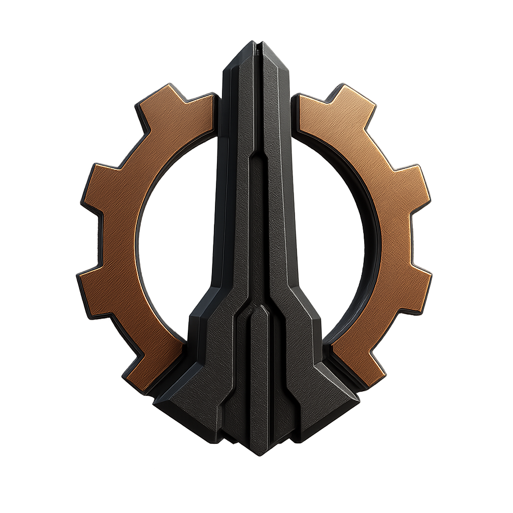

Cycle 782.19 • Nexi Exclusive
NEXI EXCLUSIVE: HELGA BRITANNIA — THE CROWN THAT SINGS—
Interview conducted by our Question Algorithm v.32.7 (“Less Accuracy, More Drama”). One of only
5,000 exclusive interviews she gave this year! Sponsored by VANTISYN™ — “Be More Than Born.”
Helga Britannia speaks on ruling through resonance, brushfires with Dominion clergy, and why even rusted
stations deserve an anthem. Catch a taste of the Nexi exclusive before diving into the full dramatics of
our Question Algorithm’s five burning prompts.
#CrownWave #TourNeverDies #VacuumVibrato
Read the full interview

Cycle 782.10 • Broadcast Link 12
Governor Elara Voss
The newly appointed governor outlines her stabilization doctrine for the sector, addressing
refugee integration, supply line restoration, and the clandestine negotiations with the Scion
envoys approaching from the Perseid Trench.

Cycle 782.07 • Station Archive
Outpost Chief Engineer Kael Iruun
A deep dive into the recent reactor overhaul, detailing how modular coolant spines and recycled
pirate capacitors are keeping the shield grid stable despite persistent micrometeor strikes.

Cycle 781.88 • Frontier Times
Ambassador Tali Nesh
The Eagle Commonwealth envoy discusses trade concessions, diplomatic overtures toward the Nova
Confederation, and the collaborative patrol routes planned for the contested Silver Drift.